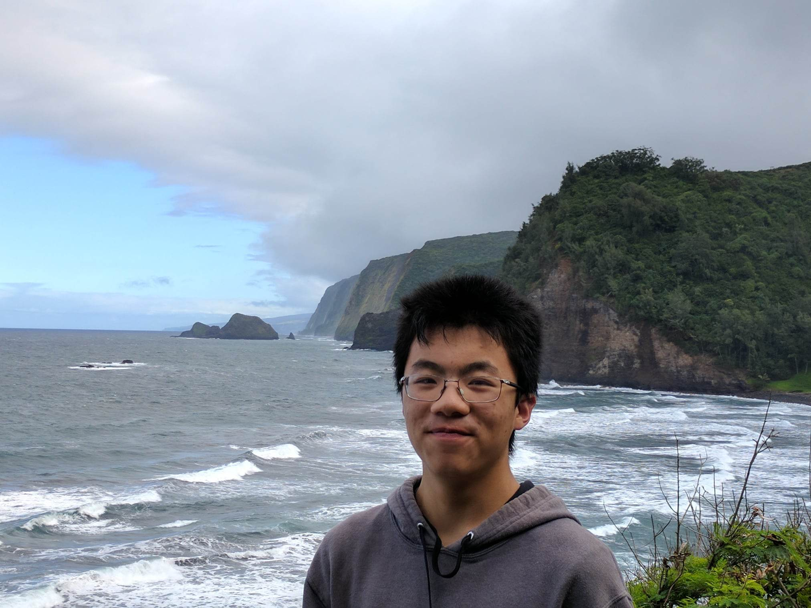

Hi! I'm Alex
I'm a third year Mechanical Engineering Student at the University of British Columbia.
I am passionate about new technology, especially in the fuel cell and hydrogen industry.
When I graduate, I hope to help develop technologies such as these and help fight our climate crisis.
In my free time, I love to hike, play chess, and work on coding projects.
Thank you for visiting my profile. I invite you to take a look at my past work experience and projects below.
Thank you for visiting my profile. I invite you to take a look at my past work experience and projects below.

Work Experience
Esenso Biotech
Software Developer
At Esenso, I worked on an android application that allows users to run voltammetry experiments (which is a type of electrochemical experiment) using Bluetooth devices connected to the app.
Later (not during this term), I developed a web application that performs a similar function, which I showcase in the projects section below.
Later (not during this term), I developed a web application that performs a similar function, which I showcase in the projects section below.
Flex Alert
Software Developer (Part Time)
At Flex Alert, I helped develop software that utilizes satellite data to monitor soil conditions of farms.
In particular, I wrote software that collects data from online satellite databases using RESTful API, and processes and stores the data using Google Cloud Platform tools.
Jetstream Adventure Boats
CNC Technician
My role at Jetstream Adventure Boats is to operate and maintain CNC machines.
In addition, I am responsible for preparing CAD models of parts to be CNC machined.
Projects
Farm Indices Webpage ››
Vehicle Dyno ››
Voltammetry App ››
‹ Projects
Farm Indices Webpage
Background
One of the objectives of my previous company, Flex-Alert, is to develop tools to optimize the usage of resources, such as water and pesticides, in agriculture.
Our approach is to use satellite data.
In particular, if we split a satellite image into its primary components (different frequencies of red, green, blue), then we can use a function to calculate something known as an index (which is just a normalized value).
Different indices have been developed for different purposes;
for example, the NDVI index can be used to evaluate the health of vegetation.
I created this webpage to display indices on a farm in Summerland, BC. The webpage allows my team to visually evaluate how indices have changed during the summer of 2022, and how indices vary geographically on the farm.
Behind the scenes, I created a server using Google App Engine to extract and process satellite data (from a satellite database known as EOS Crop Monitoring). On the server, the indices for each pixel are calculated and stored on Google Cloud. The webpage uses the data stored in Google Cloud to graph the indices on a map.
Click on the image to view the webpage!
‹ Projects
Vehicle Dyno
Background
I am part of the UBC Supermileage Design Team, and our goal is to design and build vehicles that push the limits of efficiency.
Every year, we travel to compete with schools from all over North America.
We spend a lot of time testing and optimizing our vehicles so we can compete among the best. One important tool that we use to test our vehicles is a dynamometer (commonly known as a dyno). A dyno acts like a treadmill for a car, and it allows us to easily test our vehicles in a controlled environment.
We spend a lot of time testing and optimizing our vehicles so we can compete among the best. One important tool that we use to test our vehicles is a dynamometer (commonly known as a dyno). A dyno acts like a treadmill for a car, and it allows us to easily test our vehicles in a controlled environment.
We started the dyno project in the fall of 2020, and finished building most of the system in the fall of 2022. Our main objective was to have a mechanism where we would be able to control the amount of torque that we apply to the powertrain of the vehicle. This would be incredibly useful, because it would allow us to simulate the vehicle running on any type of track. We achieved this by using a hysterysis brake, which allows us to use current to control the amount of torque produced.
Starting in 2022, I worked on the dyno as the project lead, and I oversaw the manufacture and assembly of the dyno. The pictures on the right show a solidworks rendering, as well as a photo of the dyno during a test with the powertrain of one of our cars.
‹ Projects
Voltammetry App
Background
Voltammetry is a type of electrochemical technique often used to determine the composition of a liquid sample.
To conduct a voltammetry experiment, we apply a sequence of voltages to a sample. This causes the chemical specimens in the sample to undergo redox reactions, which produces a current. If we measure and analyze the current and voltages, we can gain insight into what types of redox reactions are occuring, and the associated specimens in the sample.
Voltammetry has applications in various industries such as medicine and agriculture.
To conduct a voltammetry experiment, we apply a sequence of voltages to a sample. This causes the chemical specimens in the sample to undergo redox reactions, which produces a current. If we measure and analyze the current and voltages, we can gain insight into what types of redox reactions are occuring, and the associated specimens in the sample.
Voltammetry has applications in various industries such as medicine and agriculture.
I created this web application to run voltammetry experiments. Users are required to connect a potentiometer (which is a device that applies voltage and reads current) to a USB port. Next, they are able to set experiment parameters, and start and stop the experiment from within the program. The data points are graphed as the experiment runs, and the app allows users to perform data analysis on the data.
Click on the image to view the webpage!

Contact
If you would like to get in touch, please reach out to me with my contact information below.
I have also included a message box below if you would like to send a message directly to me, or share any feedback.
Thank you so much for your interest, and I look forward to talking to you soon :)
Thank you so much for your interest, and I look forward to talking to you soon :)
Email:
age@student.ubc.ca
Phone number:
(778) 846-2028
Message Box
Send
Thank you for your message! It has been recieved and I will read it as soon as I can. Something went wrong :( If this error persists, please contact me by email instead. Message being sent...